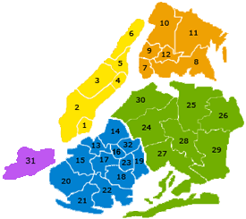

District-level Demographics and Graduation Rates of Cohort 2019
-
Manhattan: Districts 1, 2, 3, 4, 5, and 6
The Bronx: Districts 7, 8, 9, 10, 11, and 12
Brooklyn: Districts 13, 14, 15, 16, 17, 18, 19, 20, 21, 22, 23, and 32
Queens: Districts 24, 25, 26, 27, 28, 29, and 30
Staten Island: District 31
-

Figure 1. NYC School District Map (Source: Teach NYC, NYC DOE)